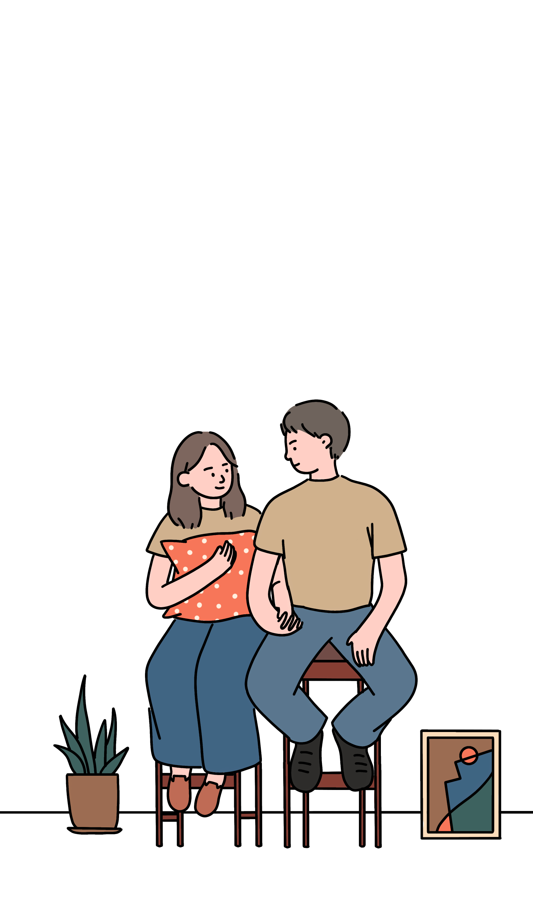

首页
初见
新年
星夜
生活
争执
决定
Yes, it's our wedding!
请用手机竖屏浏览哦
初见
慢慢滑哦
刚见面的时候，你觉得我是什么样的人呀？
嗯
……
我记得一看到你，就觉得太正了，应该是个很无聊的人
第一印象？
……没有第一印象

邵思怡
王治钧的夫人
王治钧
邵思怡的先生
大一刚军训完的男生
都差不了太多
黑黑瘦瘦、灾难发型
王治钧，怎么说呢？
有种“北京男生的正气”？
反正是不太有趣的那种类型
因为共同的爱好，自打进入清华，
我们就一同进入了话剧队
并被安排到同组三位师父门下
不过要是能主动选择和谁一组的话
就不会有后面的故事了
英语非常好，普通话嘛……
邵思怡，上海女孩，外文系
不分前后鼻音
话剧队新生有每周练三次声、
上一节表演课、还有各种排练
同门四个人渐渐熟络
那时候感觉她很聪明、感性，对周围人和事物很敏感，在表演上也比较有想法
而我渐渐发现，王治钧这个人，看上去很好说话吧
竟然会跑去代表经管学院辩论，
还跑回四中做开学典礼演讲
聊起前女友的时候呢，又特别黯然神伤
还有，虽然他看上去很“正”，却有个绰号叫“大花儿”？
总之，他和表面反差挺大的
日复一日，我们几个人
一起看戏、一起吃饭、一起刷夜
一群陌生人就这样与彼此紧紧相连
→
下一章 新年